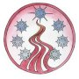

Developed by: CoM_Solaufein
The Undying's Support Forum: The Undying's Forums Check for progress on version 3!
The Undying's Web Site: The Undying.net
I. INSTALLATION
Though this mod is made using the WeiDU standard, and *should* be
compatible with all other WeiDU-based mods, there is always the possibility
for conflicts. We suggest you install this mod AFTER the official
patches, Baldurdash, and TeamBG mods. If you encounter any problems installing the mod, please our forums.
II. UNINSTALLATION
Uninstalling is simple. Double-click the setup-The Undying.exe file and enter the
given commands for Uninstallation. III. COMPATIBILITY
The Undying should be compatible with most Weidu mods, there is
always a chance that incompatibilities will arise. IV. FAQS
Q: What do I need to use this MOD? Q: Is this mod the combination of the first Undying mod and Desecration of Souls and the Ninafer NPC mod? Q: Are there any new encounters or quests? Q: Will this MOD add new quests or encounters to the Throne of Bhaal expansion? Q: What are these extra items that are in the mod folder and the Override folder but they are not in the game? The Undying is a WeiDU-based mod for Baldur's Gate II: Shadows of Amn and Throne
of Bhaal. This mod adds two new NPCs that will join your party, Callisto & Ninafer. Callisto is a CE evil elven berserker fighter with a tragic past and a sadistic present. Ninafer is a LN elven fighter/mage of Mystra. She joins your party for adventure and she may find love with Anomen if he is not romancing your character. This mod also includes new encounters, which is part of Callisto's Quest to find those who wronged her in the past, new items, stores, dialogs between
Callisto, Ninafer and fellow NPCs and the player's character. There are also a few minor quests to undertake, which can be found in the Spoilers section. As usual, The Undying should
be compatible with most other WeiDu-based mods, and should be installed after
all official patches and preferably the Baldurdash Fixpack or G3 Fix Pack. The Undying requires
the Throne of Bhaal expansion pack.
Check the spoilers thread for more information on the quests as well.
There are five encounters that deal with Callisto and they should be done in this order but its not required to do so.
There is a quest to find a missing magical book. It begins by asking Raven in The Dwarven Hammer, the new inn.
Lord Ashram in the Dwarven Hammer has a quest in finding his lost bust of Mystra.
There's a farmer in Umar Hills that wants you to get a called Umar Witch Project Journal.
VII. LEGAL MATTERS
The Undying is copyright © 2002-2015.
BALDUR'S GATE II: SHADOWS OF AMN, BALDUR'S GATE II: THRONE OF BHAAL: ©
2000, 2001 Bioware Corp. All Rights Reserved.
The Undying is not developed, supported, or endorsed by BioWare or Interplay/Black
Isle. REDISTRIBUTION NOTE: The Undying was created to be freely enjoyed by all Baldur's
Gate II: Shadows of Amn gamers. The Undying, however, may not be altered, sold, published,
compiled or redistributed in any form without the consent of its author. Many people are to be thanked for their support and contribution to this mod.
First and foremost, we'd like to thank Bioware and Black Isle for supplying
us with such an enjoyble PC game. We would also like to thank the Infinity
Engine community as a whole for their ongoing dedication and support of the
Baldur's Gate series.
Big thanks go to these following individuals for their assistance with The Undying:
Below are links to community-related sites:
Version 2.53 Beta Quick Fix. (April 11, 2015)
CHANGES BUGFIXES Version 2.52 (February 11, 2015)
CHANGES BUGFIXES Version 2.51 Quick Fix. (September 6, 2014)
CHANGES BUGFIXES Version 2.50 Now compatible with Enhanced Edition Release. (September 1, 2014)
CHANGES BUGFIXES Version 2.11 Release. (December 21, 2012)
CHANGES BUGFIXES Version 2.10 Release. (March 18, 2012)
CHANGES BUGFIXES Version 2.09 Release. (April 13, 2011)
CHANGES BUGFIXES Version 2.08 Release. (December 5, 2010)
CHANGES BUGFIXES Version 2.07 Release. (June 13, 2010)
CHANGES BUGFIXES Version 2.06 Release. (February 02, 2010)
CHANGES BUGFIXES Version 2.05 Release.
CHANGES BUGFIXES Version 2.04 Release.
CHANGES BUGFIXES Version 2.03 Release.
CHANGES BUGFIXES Version 2.02 Release.
CHANGES BUGFIXES Version 2.01 Release.
CHANGES BUGFIXES Version 2.00 Release.
CHANGES BUGFIXES Version 1.02 Release.
CHANGES BUGFIXES Version 1.01 Release.
CHANGES BUGFIXES Version 1.00 Release.
CHANGES BUGFIXES Version 0.00 First Private BETA Release.
CHANGES BUGFIXES
Afterwards, you may delete the following files:
Back to top
A: The Undying requires Baldur's Gate II: Shadows of Amn and Throne of Bhaal with
the latest Bioware/Interplay patches. We also strongly encourage the installation
of the Baldurdash Fixpack or the G3 BG2 fix pack as well. This mod can be yused for the Enhanced Edition as well.
A: Yes this mod is the combination of three of my mods. This was originally going to be one large mod but due to the lack of free time and patience, I divided up the mod in smaller portions and released it like that. DoS was the first release of it followed by Ninafer and then I finally got Callisto done to the way I wanted her.
A: There are many encounters in The Undying mod. There are five encounters which are part of Callisto's quest of revenge. Four of them take place on the surface and the final takes place in the Underdark. Read the spoilers section for their locations. Ninafer has a minor quest which hasn't changed from the earlier version of her mod. She was going to have a major quest but that has been scraped. I can't access those mod files at the moment. There are a few other minor encounters and quests found in this mod as well.
A: No there are no new quests or encounters at this time. There was going to be a major quest but that has been scraped due to not being able to access those mod files on my hard drive.
A: The items with the CMTU**** will show up in the game, either on the corpses after your fight with some of the new encounters or in the new stores. The items with the CM***** and COM*** prefix are installed into the game but do not show up in the game. They are a bit over kill which is why I didn't include them. You can use the Console command to import them into your game if you want to use them.
Two Optional Installs:
Smarter Enemy Scripts
This is a few creature scripts that will make some of the enemies smarter like beholders, vampires and the demilich.
Harder In Game Enemies
These are modified enemies. They have been modified in stats and/or the equipment they have.
The first encounter is with Valis who is found in the sewers below the Slums District.
The second one is with Marius who is found upstairs at the Five Flagons. He is by himself.
In Umar Hills you will meet Cormak and his bandits for the third encounter.
In the Underdark before you enter the drow city you will meet the final encounter with Aliska and Nastor. They are glad to see you and Callisto. This encounter really should be done last. It explains their interest in Callisto.
Go back to Umar Hills south of where you found Cormak. Here you will find the former army of Callisto's. She would love to see her old followers again.
Not really a quest of Ninafers, but she is happy if you take it. You help a priest of Mystra recover a book that was taken from him. The priest can be found in the Temple District. The people responsible for the theft can be found in the upstairs of the Five Flagons Inn.
All images and contents of this mod are copyright BioWare, Interplay/Black
Isle or Wizards of the Coast.
http://teambg.org/
TeamBG ~ Infinity Engine Modding News
http://teambg.net/
TeamBG
http://chosenofmystra.com/
The Chosen of Mystra
http://chosenofmystra.net/
The Chosen of Mystra News
http://chosenofmystra.org/
Infinity Engine game resources.